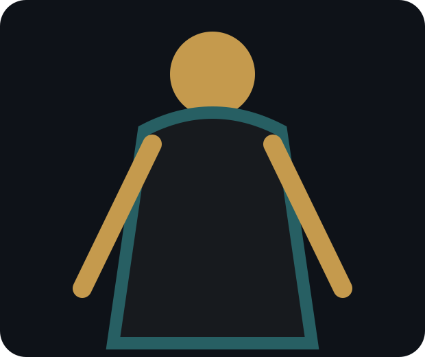
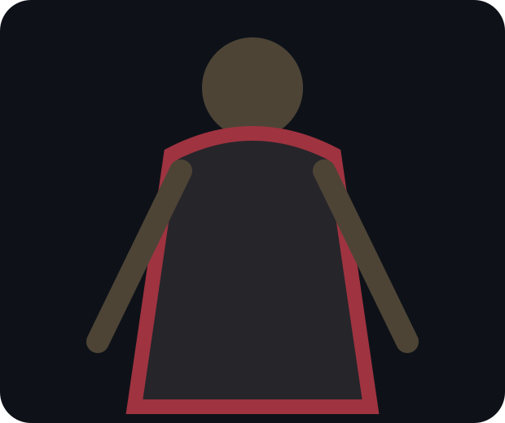
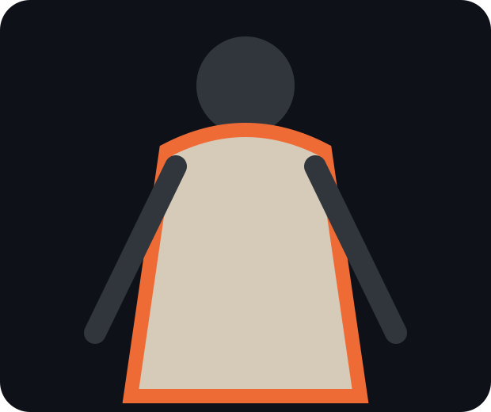
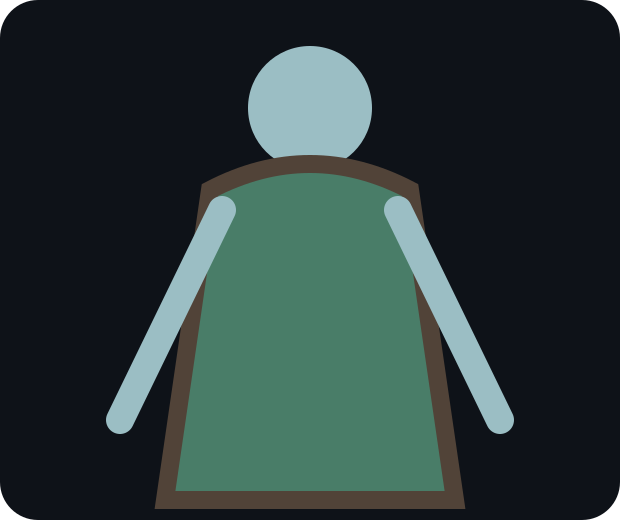
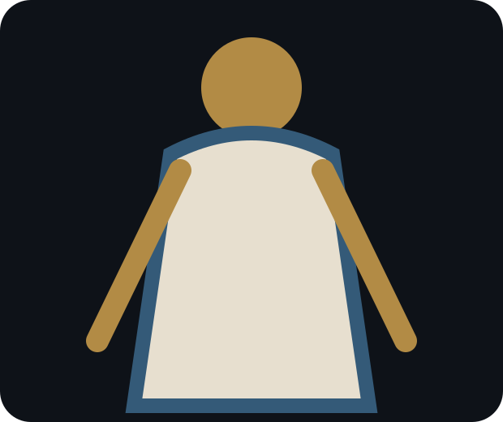
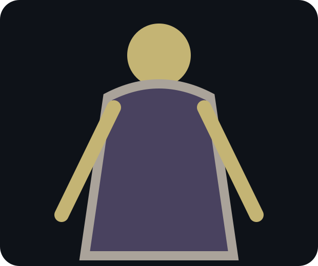

Free Delvers · CH03
Orin Pell
ally, medic, and exacting craft mentor
Silhouette: square satchel frame and rolled sleeves
Signature: Nine-Stitch Satchel
Grammar: three-step triage: stop, name, spend
Pressure: Elian must accept treatment; Mira must stop hiding pain
Avoid: miracle healer, carefree comic medic, resemblance to Elian

Ash Crown · CH04
Sable Renn
rival, antagonist, eventual provisional ally
Silhouette: twin red heel forks and one shoulder higher
Signature: First-Lane Greaves
Grammar: committed linear bursts, no safe stop
Pressure: forces Elian to distinguish reading from ownership; tests Mira's mercy
Avoid: secretly harmless rival, cat burglar silhouette, easy redemption

Bellwright Remnant · CH09–11
Ilyra Quoin
mentor and discredited bellwright
Silhouette: three tuning arcs carried like ribs
Signature: Three-Note Sternum Cage
Grammar: counters only after hearing a complete cycle
Pressure: offers Elian truth at the cost of Mira's trust
Avoid: mystic crone, omniscient mentor, vague prophecy
Free Delvers · CH12
Tovan Rusk
lift captain and public-duty ally
Silhouette: wide key ring balanced against one braced boot
Signature: Liftkeeper's Thumb
Grammar: terrain control through lifts, gates, counterweights
Pressure: makes Elian answer to civilians, challenges Mira's formation priorities
Avoid: jolly innkeeper, bumbling bureaucrat, giant hammer user

Verdigris Communion · CH06
Nemea Silt
morally ambiguous cultivator and flowkeeper
Silhouette: ribbed copper water frame around the spine
Signature: Mire Choir Stopper
Grammar: redirects liquid, heat, and Qi rather than striking
Pressure: tempts Elian with nonviolent control; refuses Mira's person-first triage
Avoid: nature saint, poison witch, barefoot waif

Civic Meridian Office · CH10 shadow, CH17 face
Cassian Vey
strategic antagonist and civic sponsor official
Silhouette: perfect square ivory collar and one vertical blue seal
Signature: Sponsor Writ Seal
Grammar: turns permissions, liabilities, and schedules into weapons
Pressure: offers Elian lawful authority; treats Mira as an expensive stabilizer
Avoid: cackling noble, military tyrant, physically imposing villain
Free Delvers · CH05
Bryn Corda
chainwright craftswoman and reluctant ally
Silhouette: double coil harness framing both shoulders
Signature: Chainworks Traveling Anchor
Grammar: builds moving safe points while others fight
Pressure: makes Elian choose repairability; clashes with Mira over prototype risk
Avoid: cheerful blacksmith, dwarf coding, magical instant forging
Ash Crown · CH08
Varo Quell
Ash Crown retrieval chief
Silhouette: black triangular cloak opening around a rigid spine rail
Signature: Winner's Token
Grammar: removes options before drawing a narrow blade
Pressure: turns Elian's evidence into hostage leverage; respects Mira's explicit terms
Avoid: smirking assassin, sadistic torturer, generic raven motif

Archive Concord · CH11
Hana Mire
archive investigator and conditional ally
Silhouette: two unequal lens frames and a folding square
Signature: Cold Ledger Shard
Grammar: reconstructs transactions while allies hold the scene unchanged
Pressure: presses Elian toward publicity and Mira toward procedural patience
Avoid: detective trenchcoat cliché, infallible lie detector, secret assassin
Independent / Ash Crown · CH14
Rell Thorne
debt broker, fixer, and morally ambiguous operator
Silhouette: many narrow cords radiating from one low belt
Signature: Debt-Cord Shears
Grammar: negotiates and cuts obligations mid-conflict
Pressure: offers Sable exits that implicate others; sells Elian truthful partial maps
Avoid: greedy merchant caricature, cowardly informant, comic relief
Bellwright Remnant · CH13
Ysabet Glass
resonance rival and uneasy ally
Silhouette: one translucent scale fan along left forearm
Signature: Glassback Echo Scale
Grammar: stores and returns the third note of any exchange
Pressure: forces Elian to finish patterns; challenges Mira's quiet leadership
Avoid: singing bard, elegant ice mage, cruel prodigy
Civic Meridian / Free Delvers · CH16
Dagan Holt
retired delver, official inspector, obstructive mentor
Silhouette: broad empty right sleeve pinned across a ledger board
Signature: Quoin-Maker's Square
Grammar: halts fights by declaring unsafe structures and forcing reroutes
Pressure: blocks reckless progress, then teaches Mira how to relinquish center
Avoid: wise old warrior, gruff dad substitute, surprise powerhouse